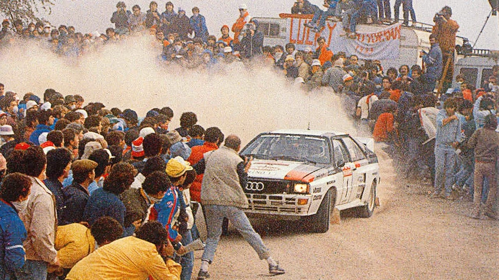
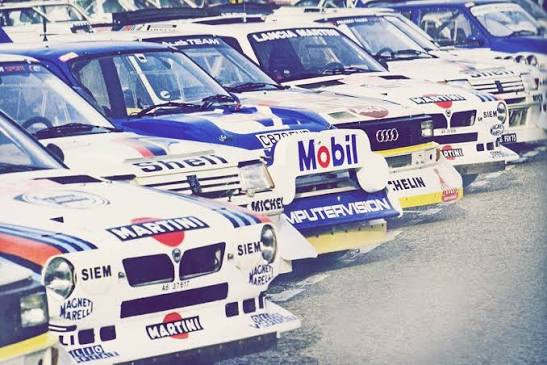
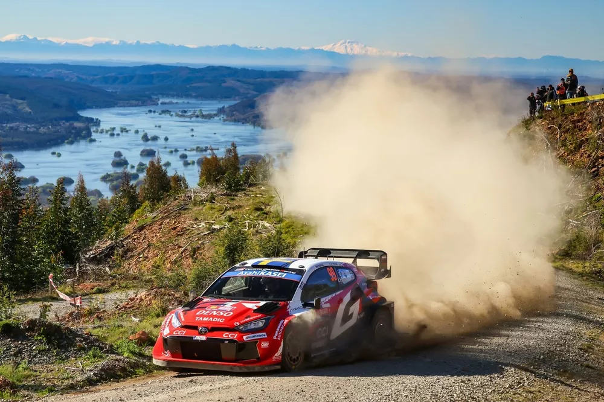
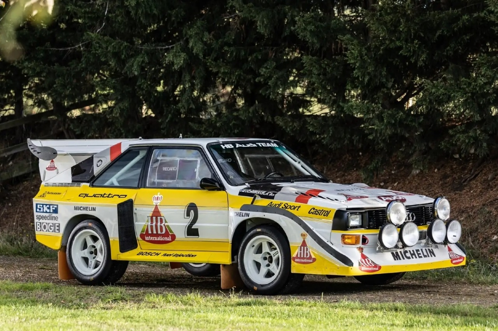
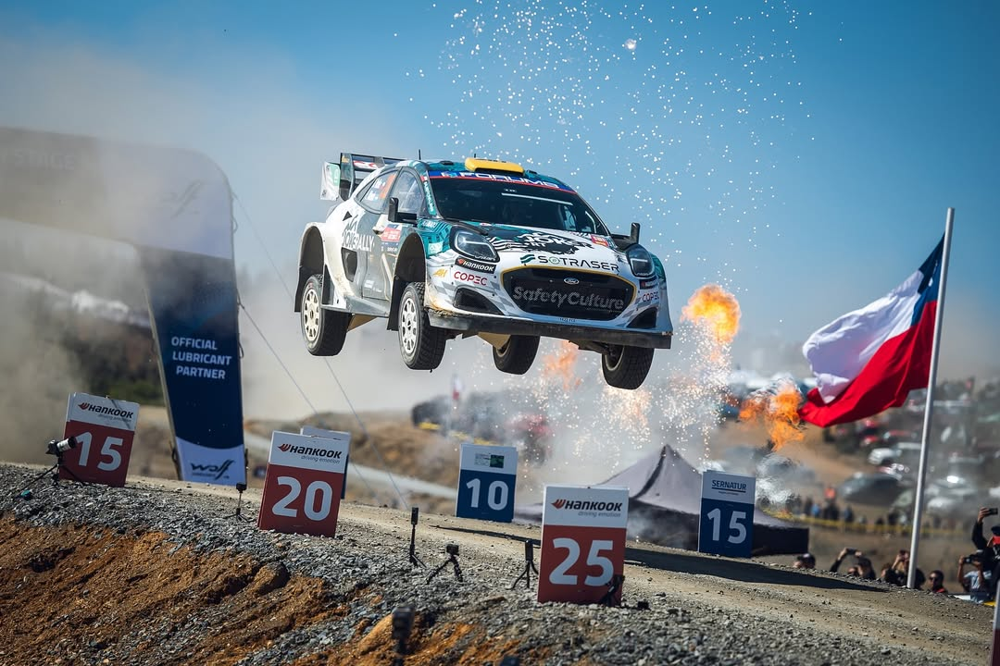

Desde los inicios hasta el Grupo B y el Rally Chile 2026
El Campeonato Mundial de Rally (WRC) nació oficialmente en 1973 bajo la organización de la FIA. Antes existían campeonatos europeos y pruebas míticas como el Rally de Montecarlo (desde 1911), pero 1973 marcó el primer campeonato verdaderamente mundial de marcas.
Ese año participaron 11 constructores: Alpine-Renault, Lancia, Fiat, Ford, Porsche, Toyota y otros. Alpine-Renault se proclamó el primer campeón de marcas, dominando el Montecarlo con un 1-2-3 histórico.
En los primeros años solo se premiaba a los constructores. El campeonato de pilotos llegó más tarde. Los coches eran derivados de producción (Grupo 2 y Grupo 4) con tracción trasera o delantera, potencias modestas y mucha habilidad del piloto.

Los primeros años del WRC (años 70 – principios de los 80)
En 1982 la FIA introdujo el Grupo B, una categoría con regulaciones extremadamente liberales: solo se necesitaban 200 unidades de homologación, se permitían chasis tubulares, materiales avanzados, turbos sin límite de presión y tracción integral.
El resultado fueron verdaderos “monstruos” de más de 400-550 CV y pesos cercanos a los 900 kg. Coches como el Audi Quattro, Lancia 037, Peugeot 205 T16 y el brutal Lancia Delta S4 redefinieron el rally.

Lancia Delta S4 – el símbolo máximo del Grupo B
Tras la prohibición, el Grupo A (coches más cercanos a la producción, limitados a ~300 CV) se convirtió en la categoría reina. Lancia dominó con el Delta Integrale (6 títulos consecutivos de marcas entre 1987 y 1992).
En 1997 nacieron los World Rally Cars, prototipos basados en modelos de calle pero con gran libertad técnica. Luego llegaron las eras de Citroën-Sébastien Loeb (9 títulos), Volkswagen-Ogier, y actualmente los Rally1 híbridos (desde 2022) con motores 1.6 turbo + sistema híbrido de unos 500 CV combinados.
La seguridad, el control de costes y la sostenibilidad han sido los ejes de la evolución, manteniendo sin embargo el espíritu puro del rally: velocidad extrema en carreteras abiertas, superficies variables y pilotaje al límite.

Toyota GR Yaris Rally1 – la generación actual (híbrida)
El WRC combina varios elementos únicos que lo hacen irresistible:
Esa mezcla de adrenalina, técnica, dramatismo y paisajes espectaculares explica por qué el WRC sigue cautivando a millones de seguidores en todo el mundo.

Audi Sport Quattro – el coche que cambió el rally para siempre
Del 10 al 13 de septiembre de 2026 se disputó la 12ª ronda del Campeonato Mundial en las cercanías de Concepción, Chile. Tramos de grava rápidos y técnicos en los bosques de la región del Biobío.
Resultado final:
Solberg logró su segunda victoria de la temporada 2026 (después de Montecarlo) y Toyota selló su sexto título consecutivo de constructores y el décimo en total, igualando el récord histórico de Lancia.
El Rally Chile se ha consolidado como una de las pruebas más espectaculares del calendario actual, con tramos fluidos, paisajes imponentes y un ambiente fantástico de los aficionados chilenos.

Ambiente del Rally Chile – tramos de grava y público apasionado